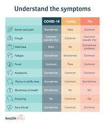

An Overview
.jpg)
The Corona Virus Outbreak has brought the world to standstill with business around the world shutting ,the economy taking a severe hit and most countries being in lockdown all of us are fighting Covid-19 the best way we can. However, in this Pandemic, the medical community including doctors,nurses and the medical staff are the warriors who are fighting this disease on the frontline and are putting their lives at risk to keep us safe. Healthcare workers cannot shelter in place with their loved ones. They are not 6 feet away from their patients. They put themselves at risk every single shift. When they go home, they worry about exposing their families. The unsung heroes of the nation are to be thanked in different ways.When everybody is sitting home, the delivery boys, the policemen, the doctors, nurses etc., are working in order to contain the corona virus. These people are corona warriors.
Symptoms

The most common symptoms of COVID-19 are fever, dry cough, and tiredness. Other symptoms that are less common and may affect some patients include aches and pains, nasal congestion, headache, conjunctivitis, sore throat, diarrhea, loss of taste or smell or a rash on skin or discoloration of fingers or toes. These symptoms are usually mild and begin gradually. Some people become infected but only have very mild symptoms.
Most people (about 80%) recover from the disease without needing hospital treatment. Around 1 out of every 5 people who gets COVID-19 becomes seriously ill and develops difficulty breathing. Older people, and those with underlying medical problems like high blood pressure, heart and lung problems, diabetes, or cancer, are at higher risk of developing serious illness. However, anyone can catch COVID-19 and seriously ill. People of all ages who experience fever and/or cough associated withdifficulty breathing/shortness of breath, chest pain/pressure, or loss of speech or movement should seek medical attention immediately. If possible, it is recommended to call the health care provider or facility first, so the patient can be directed to the right clinic.
Prevention
.jpg)
A big salute to our Corona Warriors